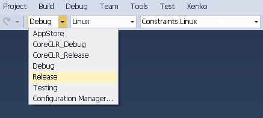

Linux 用ゲームの作成
Note
以下の説明を読む前に、「Linux - セットアップと要件」の説明に従ってください。
Stride Launcher で、新しいゲームを作成し、ターゲット プラットフォームとして Linux を選択します。
Game Studio のプラットフォーム メニューで［Linux］を選択します。

F5 キーを押し、プロジェクトをビルドして実行します。
プロジェクトを初めて実行するときは、Linux ホストに関する情報を入力します。
次のように情報を入力します。
［Test settings］をクリックして資格情報をテストします。
エラーが発生した場合は、次のように表示されます。
資格情報が正しい場合は、次のように表示されます。
［OK］ボタンをクリックして続行します。
Linux ホストの指定した場所のサブディレクトリに、ファイルがコピーされます。サブディレクトリの名前は、ゲームの名前です。
問題がある場合は、［Output］ペインで詳細を確認します。
設定
資格情報は［Settings］ダイアログで保存されます。
パスワードは、現在のユーザーに対して Microsoft System.Security.Cryptograph.ProtectedData.Protect メソッドを使用して暗号化され、［Settings］には Base64 で保存されたものが表示されます。［Settings］ダイアログでパスワードを変更することはできません。
ゲームの実行を制御する 2 つの追加設定があります。
［Use CoreCLR］: .NET Core を使用して強制的に実行します。
［X Display］: Linux ホストの特定の X ディスプレイで強制的に実行します。
Game Studio の外でコンパイルする
他の Stride プロジェクトと同様に、Visual Studio またはコマンド ラインから直接プロジェクトをコンパイルすることもできます。どちらの場合も、有効な構成を選択する必要があります。
- Debug
- Release
- CoreCLR_Debug
- CoreCLR_Release
Debug と Release のターゲットは Mono です。他のターゲットは .NET Core です。
Visual Studio
プロジェクトを Visual Studio にロードした後、Linux プロジェクトを選択します。［Solution Configurations］ドロップダウン メニューで、有効な Linux の構成を選択します。

MSBuild
Linux 用にコンパイルするには、コマンド ラインから次のコマンドを使用します。
msbuild /p:Platform=Linux /p:Configuration=CONFIG YourGame.sln
CONFIG は有効な Linux の構成です。
制限事項
ファシリティのデバッグはまだできません
レンダリング グラフィックス プラットフォームを切り替えると、ゲームが起動時にハングする可能性があります。これを回避するには、Linux ホストのゲームが展開されているディレクトリで、次のディレクトリを削除します。
cachelocalroaming